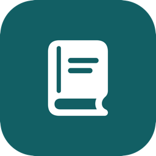
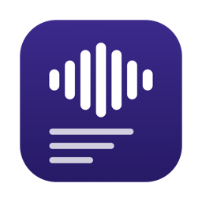
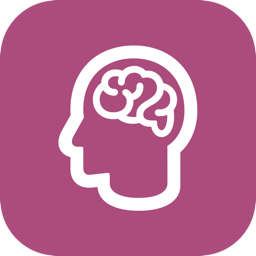

Privacy Policy
In short: PrivaAssist, PrivaPage, PrivaMeet, and PrivaStudy process your documents, recordings, transcripts, and notes on your device. HSmithDev LLC does not collect them, receive them, or have any way to access them. The apps have no accounts, no analytics, no advertising, and no tracking. The exceptions are optional connections you control: PrivaAssist's hosted models, which use your own API key, and PrivaStudy's Canvas connection, which reads from your own school's Canvas. Both are off unless you turn them on.
Overview
This policy explains how the PrivaSuite apps (PrivaAssist for Mac, and PrivaPage, PrivaMeet, and PrivaStudy for iPhone, iPad, and Mac, together "the apps") handle information. The apps are published by HSmithDev LLC ("we", "us"). This policy also covers this website, https://privasuite.harrisonsmith.ai.
What we collect
Through the apps, we collect nothing. We do not operate any server that the apps send your content to, and we never receive your documents, recordings, transcripts, summaries, flashcards, notes, or anything else you create or import ("Your Content").
The apps contain no analytics SDK, no crash-reporting service that sends data to us, and no advertising or tracking framework. We do not sell or share personal information, and we do not track you across other companies' apps or websites.
Model downloads
The apps' AI models are too large to include in the download, so each app fetches them only when you ask (from its welcome screen, Settings, or the first time you use a feature that needs one). Files come over HTTPS from Hugging Face (huggingface.co and the content-delivery hosts it redirects to) and, for the neural voice's voice file, from GitHub (raw.githubusercontent.com). Each file is checked against a checksum built into the app before it is used.
Like any download, the request reveals technical information needed to deliver the file, such as your IP address and basic device and network details. Those services handle that information under their own privacy policies. The request names only the file being downloaded and never includes Your Content.
 PrivaAssist
PrivaAssist
PrivaAssist is a Mac app distributed directly, outside the App Store. Its features run on your Mac:
- Reading aloud uses the Kokoro neural voice (about 340 MB download) or macOS system voices.
- Meeting transcription uses Whisper (about 220 MB download); summaries and drafting use the Qwen language model (about 3 GB download), both running locally through Apple's MLX and Core ML.
- Read Screen, Workflow capture, and text recognition use macOS Accessibility and Apple's on-device Vision framework.
- Organize reads the files you add and moves them only into folders you approve.
- Terminal runs a shell on your Mac. What you type and what it prints are never sent anywhere.
Permissions
PrivaAssist asks for each permission only when you press its Request button, and works without the ones you decline. You can change them in System Settings, Privacy & Security.
- Microphone: meeting recording and dictation.
- Camera: optional meeting video.
- Screen Recording: meeting system audio, screen video, and on-screen text recognition.
- Accessibility: reading selected or window text for Read Screen, and the context of steps in Workflow capture.
Optional hosted models
PrivaAssist can use a hosted AI service instead of an on-device model. This is off by default. To use it you turn on a master switch and then each capability separately (speech, transcription, or generation), enter your own API key, and confirm a plain-language statement of exactly what will leave your Mac. The key is stored only in your Mac's Keychain.
- When hosted speech is on, the text being read is sent to the provider you chose.
- When hosted transcription is on, the meeting's audio is sent.
- When hosted generation is on, the prompt (for example, the transcript to summarize) is sent.
These requests go directly from your Mac to the provider you configure (Anthropic, or an OpenAI-compatible service at an address you enter), under your account with that provider and its privacy policy. They never pass through us. Screenshots, workflow capture images, raw audio outside transcription, Terminal input and output, and Read Screen text (unless you turn on its own separate switch) are never sent. Every hosted use shows a "Hosted" badge, and a local call history records when calls happened and their size, never their content. Offline mode blocks all of it, and the app never switches between hosted and on-device processing without telling you.

PrivaPagePrivaPage keeps its own copy of each PDF you import, extracts its text on your device (using Apple's on-device Vision framework for image-only pages), and reads it aloud with your device's built-in voices or, if you download it, the Kokoro neural voice (about 340 MB). Reading positions, bookmarks, folders, and settings stay on your device. PrivaPage asks for no special permissions; it opens only the files you choose.

PrivaMeetPrivaMeet records meetings and processes them on your device. On a Mac:
- Transcription uses Whisper through the open-source WhisperKit library (about 220 MB download).
- Summaries use an open-source Qwen language model running through Apple's MLX (about 1 GB, or about 300 MB for the compact option).
- Speaker identification, if you choose it, analyzes the voices in a recording on your device to tell speakers apart and label its transcript. Its models (about 500 MB) download only after you confirm.
On iPhone and iPad
On iPhone and iPad, PrivaMeet uses the AI built into your device instead of downloading its own models. Recordings are transcribed by Apple's on-device speech recognition, and summaries, task lists, titles, and chat answers are written by Apple Intelligence's on-device model. Both run on your iPhone or iPad; PrivaMeet doesn't use Apple's Private Cloud Compute or any server-based speech recognition, and your recordings, transcripts, summaries, and questions never leave the device. The first time it's needed, iOS may download Apple's speech recognition assets for English from Apple; that download is made by iOS, is shared with other apps, and carries none of your content. PrivaMeet itself makes no network requests on iPhone or iPad, with one optional exception: the first time you tap Identify Speakers, it asks before downloading Argmax's speaker identification models (about 35 MB) from Hugging Face, which then run on your device. If Apple Intelligence isn't available or is turned off, PrivaMeet still records and transcribes meetings, and nothing is sent anywhere else instead.
Permissions: Microphone, to record meetings you start; and on iPhone and iPad, Face ID or Touch ID, only if you turn on App Lock. Authentication is handled by the system; PrivaMeet never receives biometric data, only whether authentication succeeded. When you share or export a recording or transcript, you choose where it goes, and the receiving app or service handles it under its own terms.

PrivaStudyPrivaStudy turns your material into study decks on your device. On a Mac, AI features such as card drafting use an open-source Qwen language model through Apple's MLX (about 1 GB download); lecture capture, dictation, and the voice tutor use Whisper (about 220 MB); narration uses system voices or the Kokoro neural voice (about 330 MB).
On iPhone and iPad, PrivaStudy uses the AI built into iOS instead of downloading its own models. Flashcards, notes, chat answers, explanations, and other generated study material come from Apple Intelligence's on-device model, and lecture recordings, dictation, and spoken questions are transcribed by Apple's on-device speech recognition. Both run entirely on your device; PrivaStudy sends none of your documents, recordings, transcripts, or questions anywhere. If Apple Intelligence is turned off or not supported on your device, PrivaStudy tells you so and offers its simple built-in generator instead. The first time you record in a language, iOS may download Apple's speech recognition file for that language from Apple; this is a system download that contains none of your data. The only model PrivaStudy itself downloads on iPhone and iPad is the optional natural-sounding narration voice (about 330 MB), and only when you choose to.
- Web articles: when you paste a link, PrivaStudy loads that one page on your device, as a browser would, with no cookies or stored website data, and turns its text into a deck. The website you link to sees an ordinary page request from your device.
- Microphone: lecture capture, dictation, and spoken questions to the voice tutor, transcribed on your device.
- Notifications: an optional daily study reminder, scheduled on your device.
- Screen Recording (Mac only): on-device text recognition when you use Read Screen.
Canvas (optional, off by default)
If you turn on Canvas in Settings and connect it, PrivaStudy reads your active courses, their assignments (names, instructions, and due dates), modules, and pages from your school's Canvas, plus any file you choose to download for studying. If you connect with your Canvas Calendar Feed instead, it reads only assignment names, due dates, and descriptions. These requests go only to your school's own Canvas server; a file you choose may be delivered from the file storage your school's Canvas uses. They are made only when you connect, tap Refresh, or choose Study for this, and PrivaStudy never submits or changes anything in Canvas. Your access token or feed link is kept in your device's Keychain. What PrivaStudy reads is saved on your device so it works offline, and flashcards and notes are still made on your device. Nothing is sent to us or to anyone else. Disconnect deletes the token or link and everything saved from Canvas; decks you made stay until you delete them.
Storage and deletion
Your Content is stored in each app's private storage on your device. None of the apps sync to iCloud or any other cloud service. Deleting an item in the app removes it from that device. Deleting PrivaPage, PrivaMeet, or PrivaStudy removes the data they stored on that device.
PrivaAssist keeps its data in ~/Library/Application Support/PrivaAssist on your Mac; deleting that folder along with the app removes it. Files you move with Organize stay where you put them.
Because nothing is stored on our servers, we cannot recover lost data. Use each app's export options to keep copies of anything important.
Recording other people
Laws on recording conversations vary by location, and many places require the consent of everyone being recorded. You are responsible for knowing and following the laws that apply to you. See our Terms of Use.
Apple services
If you get an app from the App Store, Apple may provide us with aggregated, anonymized download and sales statistics and, if you opt in to sharing with developers, crash reports. These do not include Your Content.
Your rights
Depending on where you live, you may have rights to access, correct, delete, or port personal information, or to opt out of its sale or sharing. Because we do not collect personal information through the apps, we have none to provide, correct, or delete, and we do not sell or share it. You control Your Content directly on your device. If you have emailed us, you can ask us to delete that correspondence.
Children
The apps are not directed to children under 13, and we do not knowingly collect personal information from children. The apps do not collect personal information from anyone.
This website and email
This website uses no cookies, analytics, or tracking, and loads no third-party fonts or scripts. It is hosted on GitHub Pages, and GitHub may log visitors' IP addresses for security and operation of its service, under the GitHub Privacy Statement.
If you email us, we receive your email address and whatever you include in your message. We use it only to reply and to help with your request, and we do not add you to any mailing list. You can ask us to delete your correspondence at any time.
Changes to this policy
If we change this policy, we will update the effective date above and publish the new version on this page. If a change is significant, such as an app starting to collect any data, we will also tell you in the app before it takes effect.
Built with AI assistance
Portions of the apps' source code were written with the help of AI coding tools. This describes how the apps were built, not how they handle your data.
Contact
Questions about this policy or your privacy can be sent to support@harrisonsmith.ai.
HSmithDev LLC